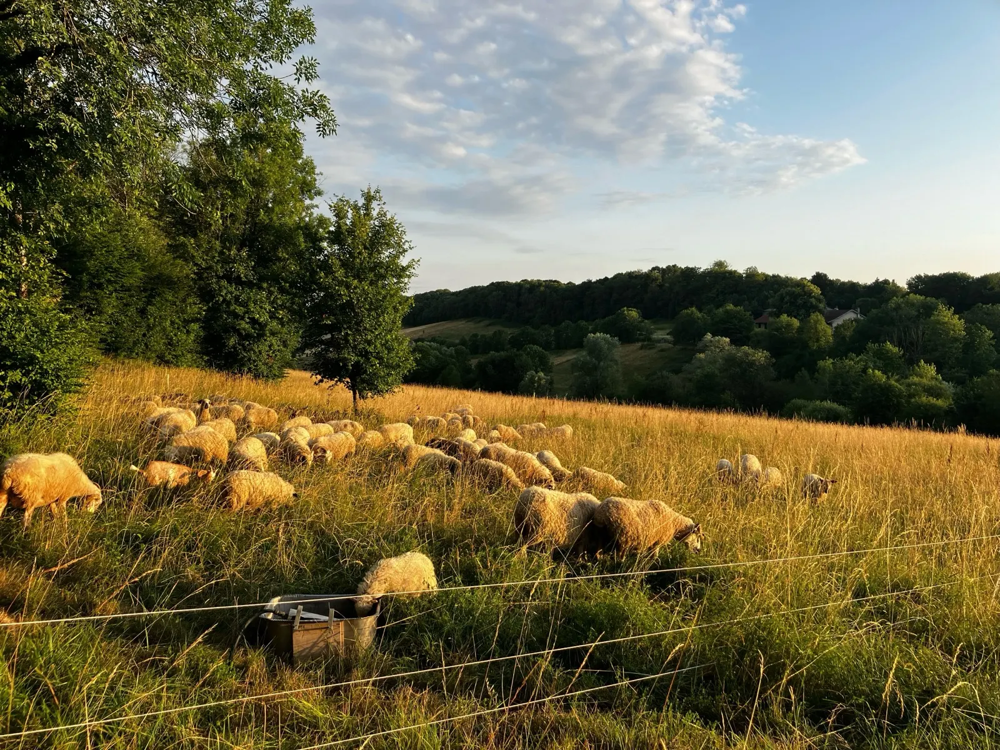
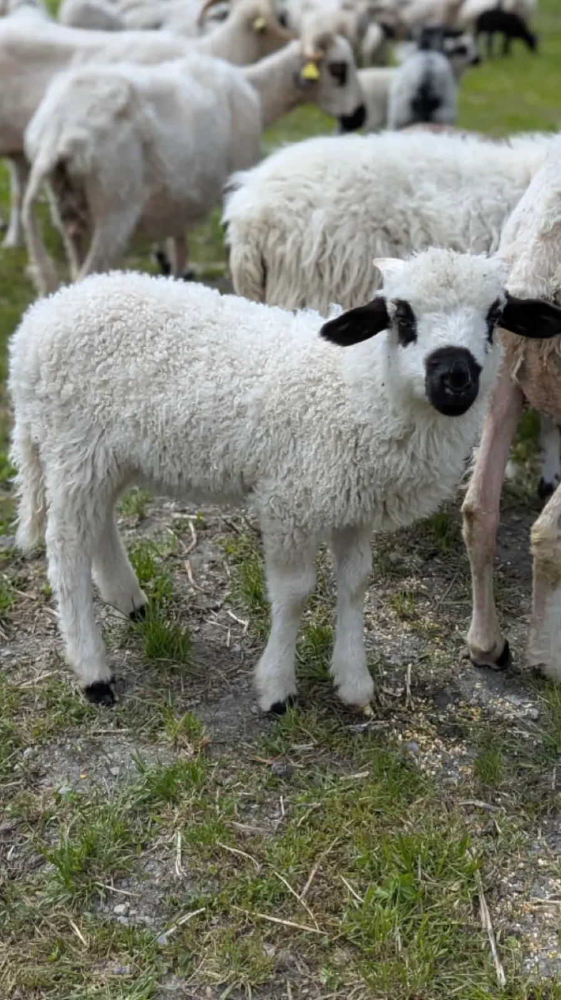
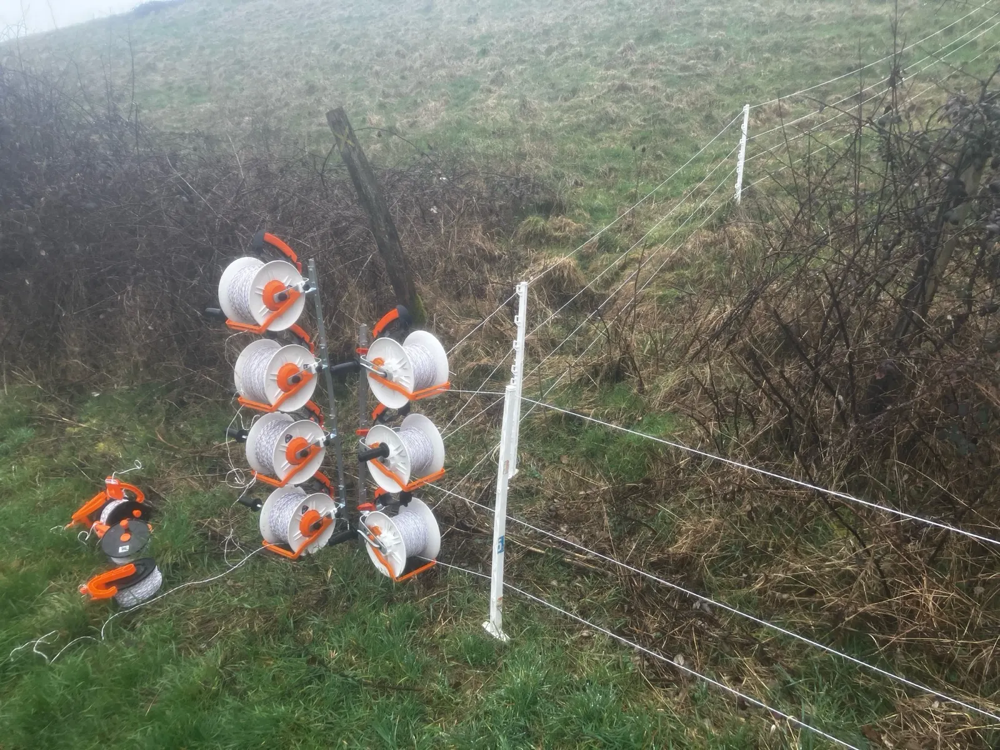
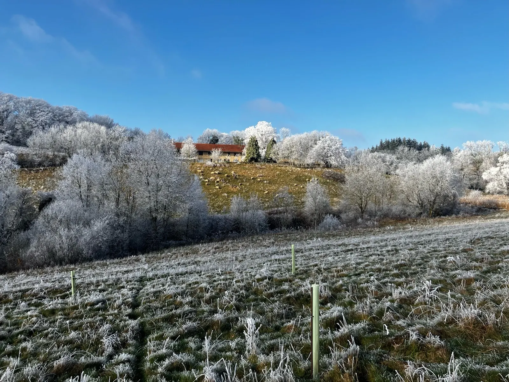
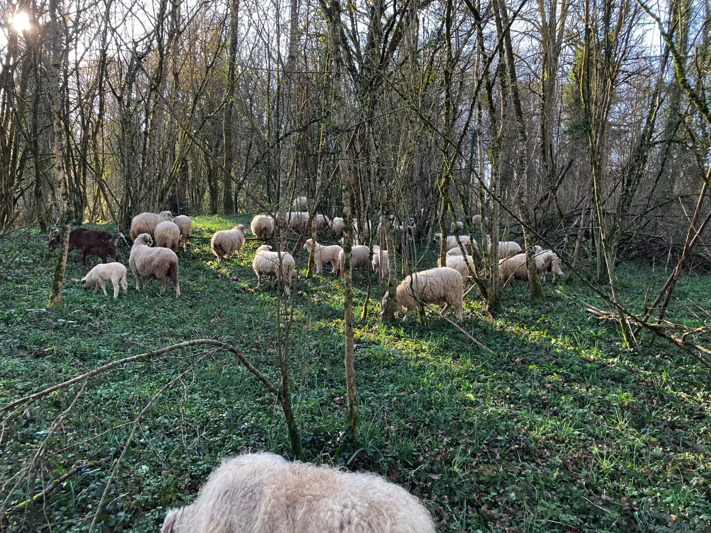
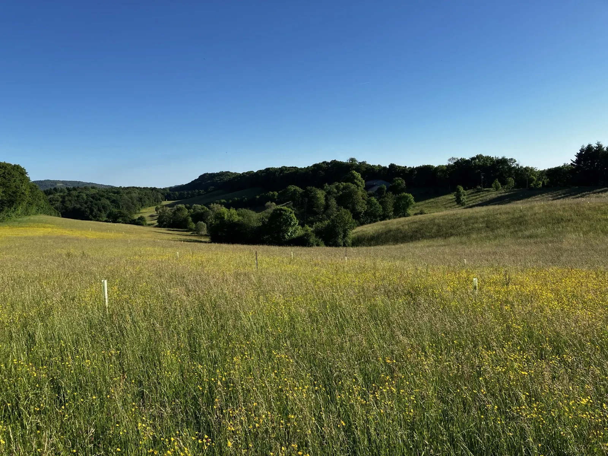
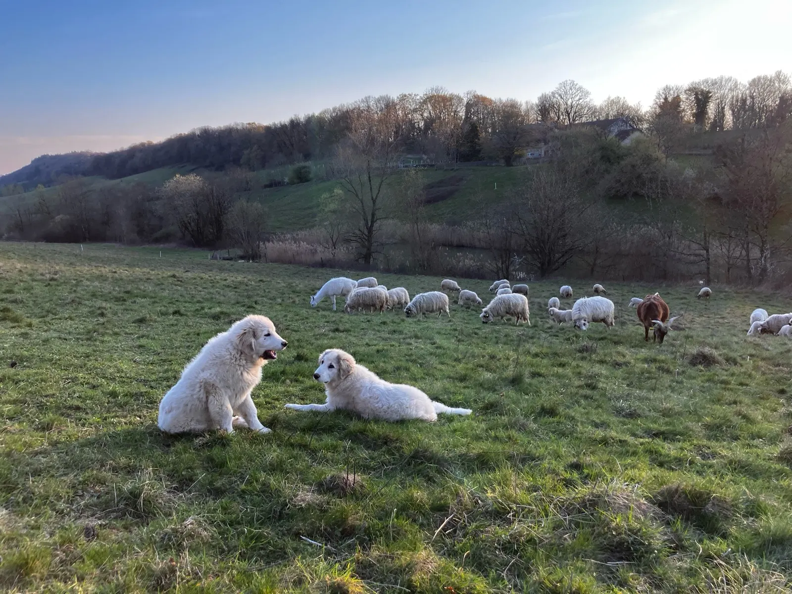
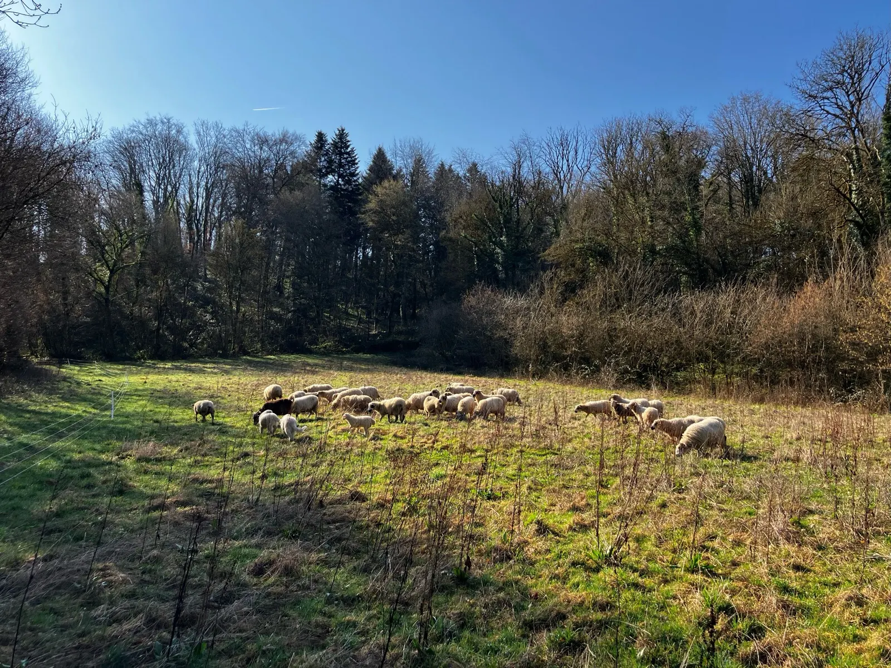
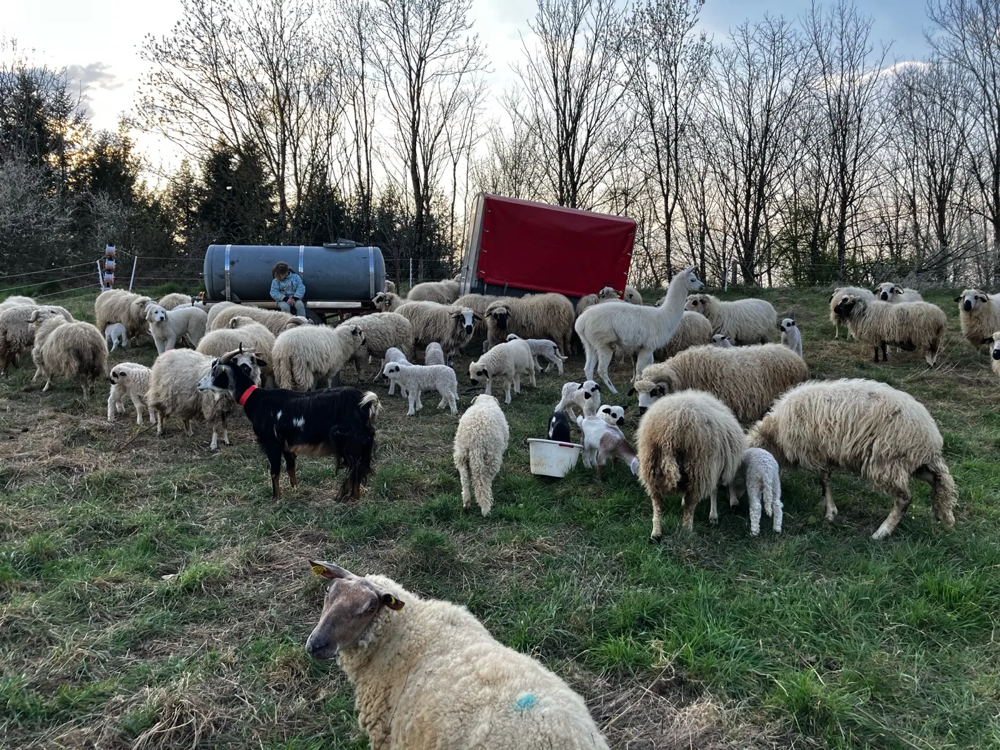
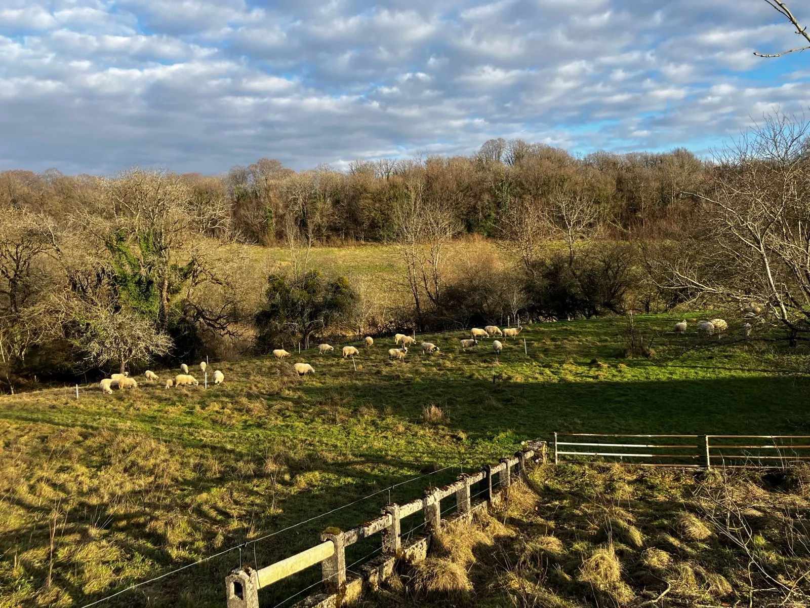

Au pré, derrière le fil de clôtureBornay, dans le Jura
Viande d'agneau bio, nourri à 100 % à l'herbe.
Une production ovine durable, tout en préservant l'environnement : pâturage tournant, clôtures mobiles, pas de fil barbelé.
- Nourri à 100 % à l'herbe, bio
- Thones et Marthod, race de Savoie
- Pâturage au repos 3 à 4 mois
- Pas de sevrage
- Pas de fil barbelé
Réservez votre agneau
La réservation se fait par e-mail, à l'adresse suivante :
moutons@ferme-montiot.com
Avec sa mère, sans sevrageNovembre2026, à retirer
- Merguez
Mars2027, à retirer
- Colis 1/2 agneau découpé
- Colis agneau entier découpé
L'auberge est toujours fermée pour rénovation.
Pâturage tournant dynamique
Nous tirons parti de la relation symbiotique entre les herbivores et les prairies et forêts pour produire une viande de qualité.

Dérouleurs de fil : la clôture mobileDes clôtures qui bougent
Nous utilisons des clôtures électriques pour reproduire les mouvements naturels des troupeaux d'herbivores suivis de près par des prédateurs.
Pas de fil barbelé. Pas de clôture fixée. On l'a arrachée.
Une courte période sur chaque parcelle
De courtes périodes de pâturage dans une zone délimitée avant de se tourner vers de nouveaux pâturages. Cette méthode permet d'accroître la productivité des pâturages, la biodiversité et leur résilience.
3 à 4 mois de repos
Nous laissons le pâturage se régénérer pendant 3 à 4 mois avant d'y faire paître à nouveau le bétail.
Pas de vermifugation systématique
La plupart des œufs de parasites meurent avant d'être ingérés. La vermifugation n'est effectuée que lorsque cela est absolument nécessaire.
Pas de céréales. Juste de l'herbe.
100 % à l'herbe, en bio
Notre viande est issue d'animaux nourris à 100 % à l'herbe et issus de l'agriculture biologique. Pas de compléments alimentaires, pas de céréales, pas d'aliments pour animaux.
Pas de sevrage
Nos agneaux restent auprès de leur mère aussi longtemps qu'ils le souhaitent.
De l'herbe pour toutes les saisons
Nous préférons planifier un an à l'avance afin de réserver suffisamment d'herbe pour toutes les saisons, et nous ne donnons que de très petites quantités de foin en cas de conditions extrêmes. Nous ne produisons pas de foin : peu de combustibles fossiles.

L'hiver sur les prairies de la ferme

De l'ombre dans les bois, des arbres dans les prés
Pratique du sylvopastoralisme : notre troupeau a toujours accès à l'ombre et à un abri contre le vent dans les bois.
Nous favorisons le retour d'un écosystème de savane diversifié en plantant des arbres et en laissant pousser les arbres spontanés. Les herbes hautes et les arbres épars aident à atténuer les effets des phénomènes météorologiques extrêmes, de plus en plus fréquents.
Chaque espèce joue son rôle
Thones et Marthod : une race rustique originaire de Savoie. Il est toutefois nécessaire de poursuivre la sélection génétique année après année.

Protection : les chiens
Pâturage : les brebis
Broutage : la chèvre
Un agneau à réserver ?
Merguez à retirer en novembre 2026. Colis 1/2 agneau découpé et colis agneau entier découpé à retirer en mars 2027.
moutons@ferme-montiot.com